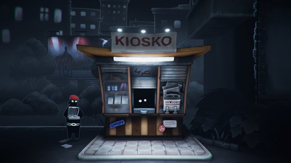
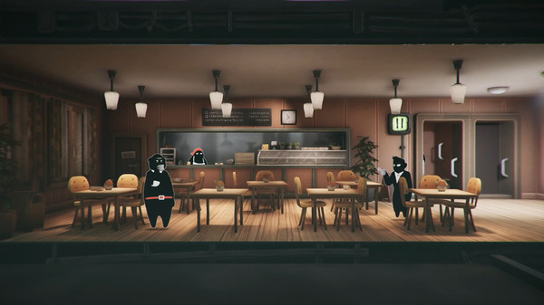
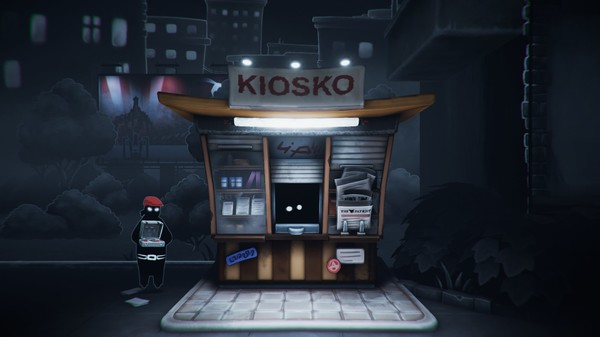
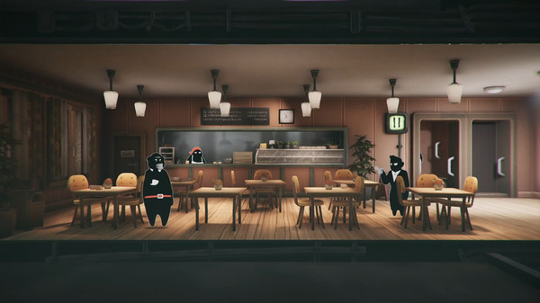

TV Thief
Вас спасла от тюрьмы сотрудница службы безопасности.
Взамен избавьтесь от тех, кто стоит на пути её секретных планов и поднимитесь по карьерной лестнице,
работая на двух работах и шпионя за арендаторами, служащими и начальством.
Тоталитарное государство, контролирующее всех и вся.
Жестокие законы, тотальная слежка, запуганные люди.
Вы Фрэнк Шварц, муж и отец, который хочет вернуться к нормальной жизни.
Когда-то у вас было тепленькое местечко в Министерстве, но все изменилось,
когда кто-то подставил вас, и вы потеряли работу.
Чтобы избежать тюрьмы, вы заключили сделку с высокопоставленной сотрудницей службы безопасности.
Теперь вы государственный шпион под прикрытием в виде арендодателя, выполняющего приказы начальства.
Взламывайте квартиры жильцов, ищите незаконные предметы и избавляйтесь от неугодных.
| Минимальные | |
| ОС: | Windows 7 |
| Процессор: | Intel Core i5 or equivalent |
| ОЗУ | 4 GB |
| Видеокарта: | Nvidia GeForce GTX 960 or equivalent |
| Место на диске: | 4 GB |